Case study · Built with AI
Private
Trip Planner
Multi-day private bookings at Siiru were planned by hand. I used AI to prototype a planner that put the whole trip on one shared board, handed it to the team, then rebuilt my own version that only the travelling group can open.
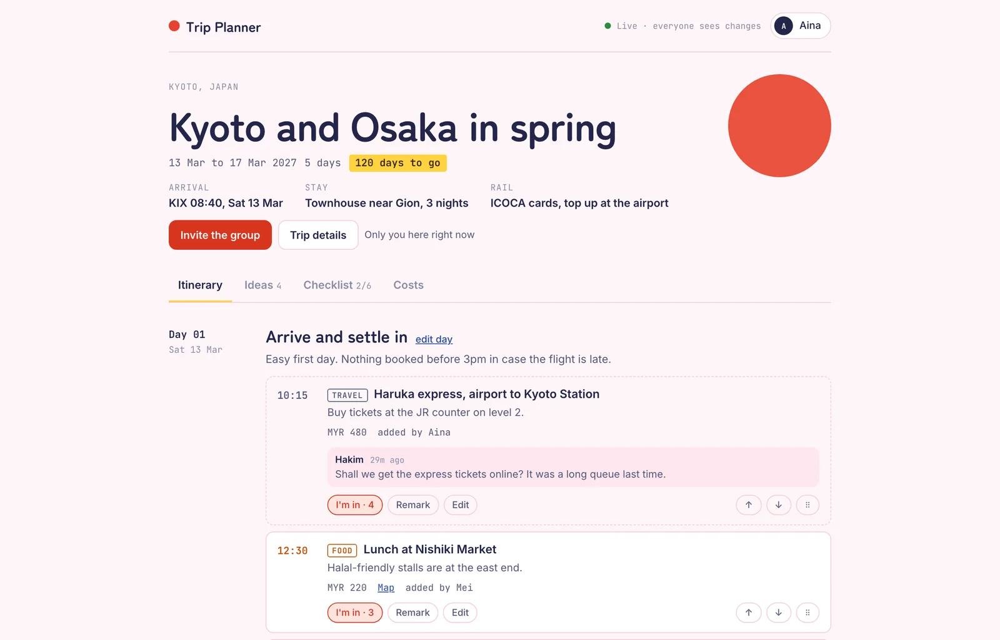
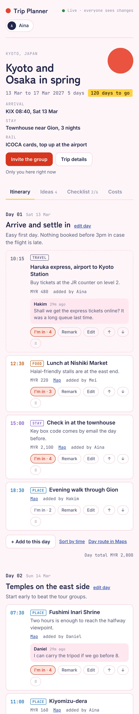
SSituation
// 01A private trip is not one booking. It is a plan that runs over several days, and every day has its own stops, times and costs.
At Siiru, these multi-day plans were put together manually. Support and Sales collected what the customer wanted, built the itinerary by hand in Google Workspace, and sent it back for review.
The slow part was not writing the first plan. It was every change after it. One swapped day meant editing the plan, exporting it again and sending a new copy, while older copies were still sitting in people's chats.
Customers sent their requests, edits and extra details to Support over WhatsApp, and more than ten rounds of changes on one booking was normal. A booking was never really finished. It stayed a work in progress until the day the customer travelled.
How a multi-day booking moved, before
- Enquiry arrivesDates, group size and wishes come in over WhatsApp.
- Plan built by handSupport or Sales types the day-by-day itinerary into a spreadsheet.
- Exported and sentA fixed copy goes to the customer to review.
- Changes come backEdit, export, resend. Ten rounds or more, right up to the travel date.
- Copies drift apartNobody is sure which version is the current one.
TTask
// 02Show that one live plan could replace the back-and-forth, without asking engineering for time first.
I manage delivery. I am not an engineer. So the task I set myself was narrow: build something real enough for the team to click through and judge, quickly, and let the prototype make the argument that a document could not.
- GoalA multi-day plan that lives at one link and is always the current version.
- For whomThe team building the plan, and the group who will travel on it.
- ConstraintNo engineering time and no budget. It had to be something I could build and change myself.
- Done whenThe team could use it on a real multi-day booking and decide whether to build it properly.
AAction
// 03I wrote the brief. AI wrote the code.
I treated the AI like a developer on my team. It got what I would give any developer: the problem, who it is for, what a finished screen must do, and what to leave out. Then I tested each version the way a customer would, and sent back what broke.
Keeping the whole planner in one HTML file was a deliberate choice. There was nothing to install and nothing to deploy. I could open it, test it and share it in the same minute.
I built it with Claude Code. Version one of the prototype took one day.
- FrameWrite the problem and the user in plain words before any screen.
- PromptAsk for one working slice at a time, not the whole product.
- TestPlan a real trip in it. Note every point where I hesitated.
- TightenSend the notes back. Cut anything the trip did not need.
“Plan and challenge my requests, do not commit without my approval.” My standing instruction to Claude Code
That one line set the working relationship. The AI had to push back on a weak request before building it, and nothing was saved until I had read it and agreed.
The prototype became Siiru's.
The original prototype now belongs to Siiru. The team used it as the starting point for an integrated system that connects trip planning with their other services.
That is the outcome a prototype should have. It did its job when it stopped being mine. It is also why none of its screens appear on this page.
- Handed overThe working prototype and the thinking behind each screen, in my final month at Siiru.
- Used forThe base of an integrated planning system inside Siiru.
- Not shownAnything that belongs to Siiru or its customers.
I rebuilt it from scratch, for the people on the trip.
I still wanted a planner for my own trips, so I built a new one. It shares the idea with the first prototype and none of the code.
The Siiru prototype was built for a booking process. It held the itinerary for several days and locations, remarks on each stop, and the appointed vendor's details. That was the right scope for the team. It was not enough for a group of friends or a family, who also need to decide together, share the tasks and split the bill.
So the rebuild adds the personal parts, lets each trip look the way the group likes, and puts a wall in front of all of it.
Prototype at Siiru
- Itinerary across several days and locations
- Remarks on each stop
- Appointed vendor information
My rebuild adds
- Ideas tab. Suggest places and vote before anything is scheduled.
- Checklist. What to book, buy or pack, and who has claimed it.
- Cost sharing. Planned totals, who paid what, and who owes whom.
- Three themes. Japan, Seaside or Tropical, chosen per trip.
- Security wall. A trip code that only group members hold.
The harder question: who should be allowed in?
A trip plan is more personal than it looks. It says who is travelling, where they sleep each night, and which days their home is empty. A link is easy to forward and hard to take back, so a link on its own could not be the lock.
I weighed three options. An open link is the easiest to use and protects nobody. Accounts and passwords are safe, but nobody in a family group wants to sign up for a holiday. A shared code sits between the two. It works like a Wi-Fi password, which every group already understands.
A code raises its own questions, so I answered those too. If someone leaves the group, the creator changes the code and the old one stops working at once. If the code is lost, it cannot be read back, only replaced, because it is never stored in readable form. And only the creator can change it, using a second key that stays in their own browser.
The result is a trip code. Each trip has its own link and its own code. A person needs both. The link alone opens a lock screen and nothing else.
The trip link and the trip code
Sent in two separate chats. The code is remembered on that device after the first entry.Call six database functions
Five check the trip code first. Changing the code needs the creator's own key instead.The tables themselves
No direct reads or writes. Codes are stored as bcrypt hashes, so a lost code is replaced, never read back.| What the rebuild adds | Why it matters to the group |
|---|---|
| Trip code on every trip | Only group members can open or edit the plan. |
| Creator-only "Change code" | Removing someone is one step: change the code and send the new one to those who stay. |
| Live updates | An edit on one phone shows on everyone's board as it happens. |
| Ideas and votes | The group decides together before anything goes on a day. |
| Checklist with owners | Each task to book or buy has a name next to it. |
| Costs and settle-up | The board works out who owes whom. |
| Three colour themes | The trip feels like the group's own, not a company form. |
About these screens None of this is a real trip or plan. The people, places, dates and costs are invented for the demo, and any discrepancy is intentional, for discussion purposes. The planner itself is private and is not open to the public.
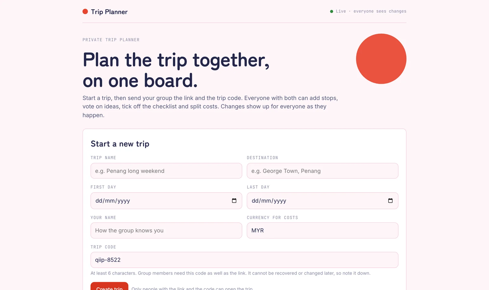
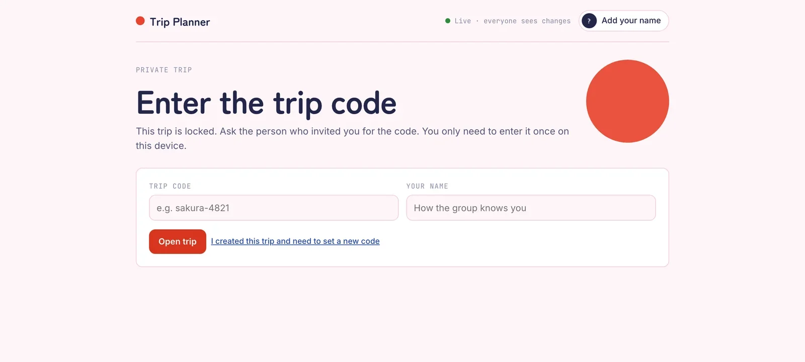
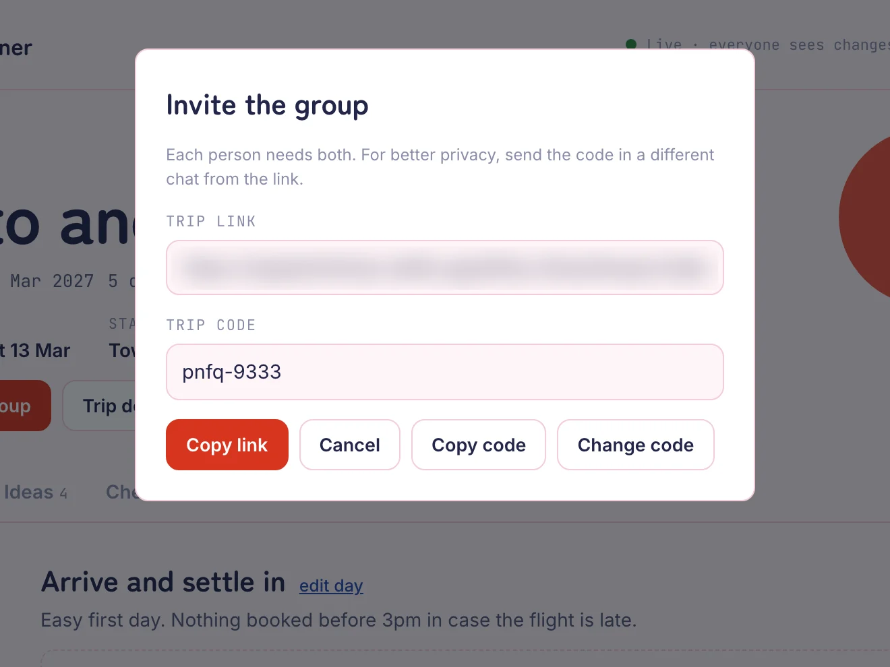
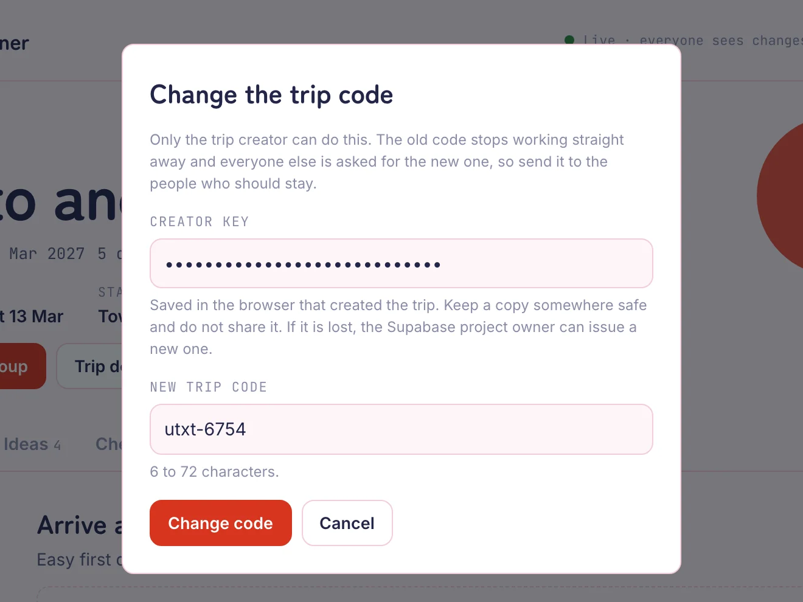
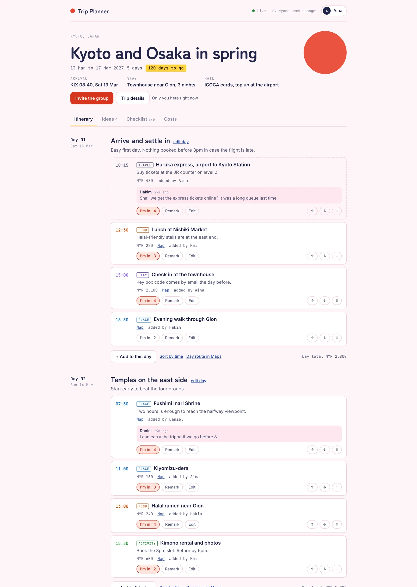
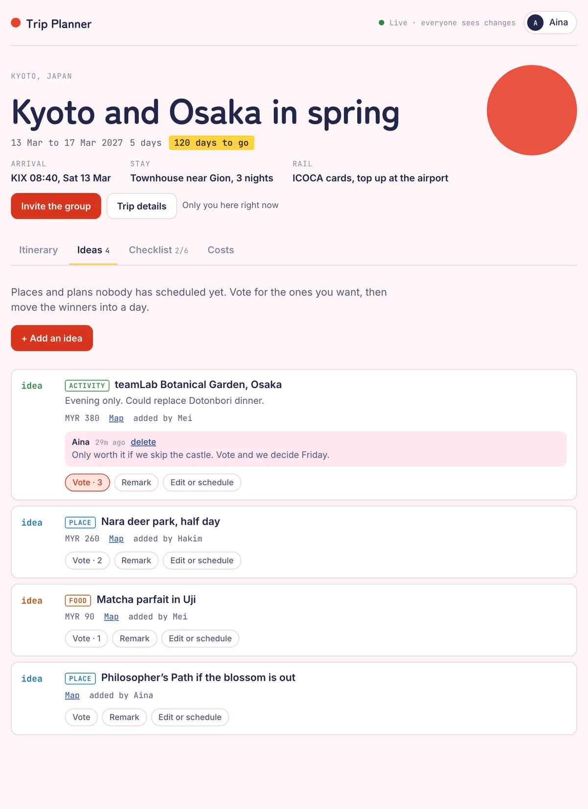
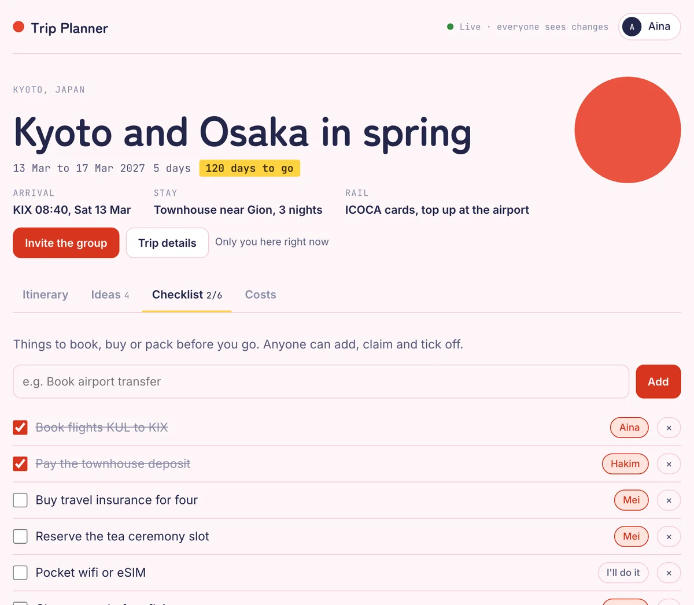
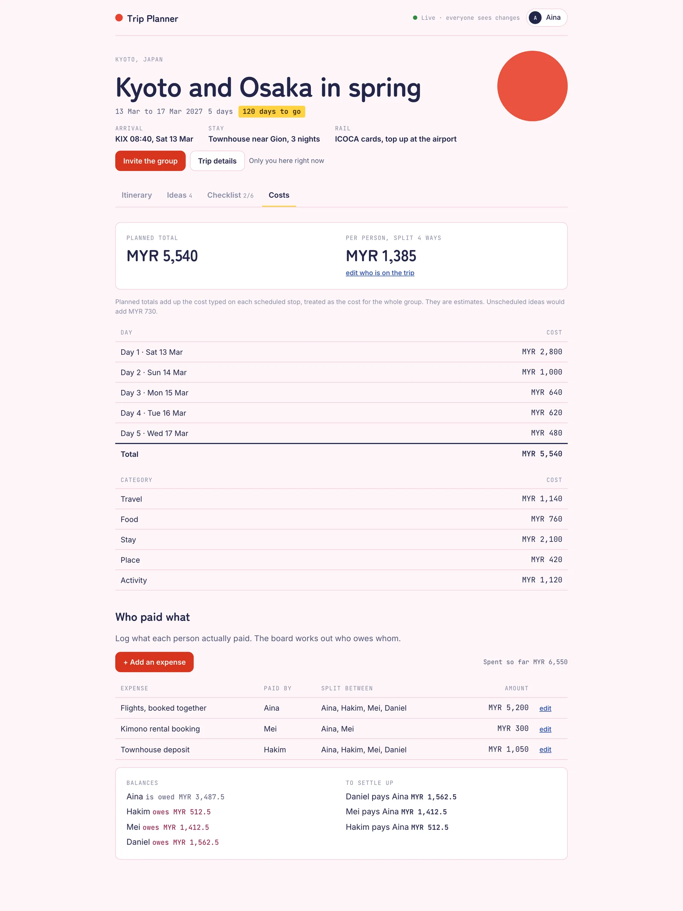
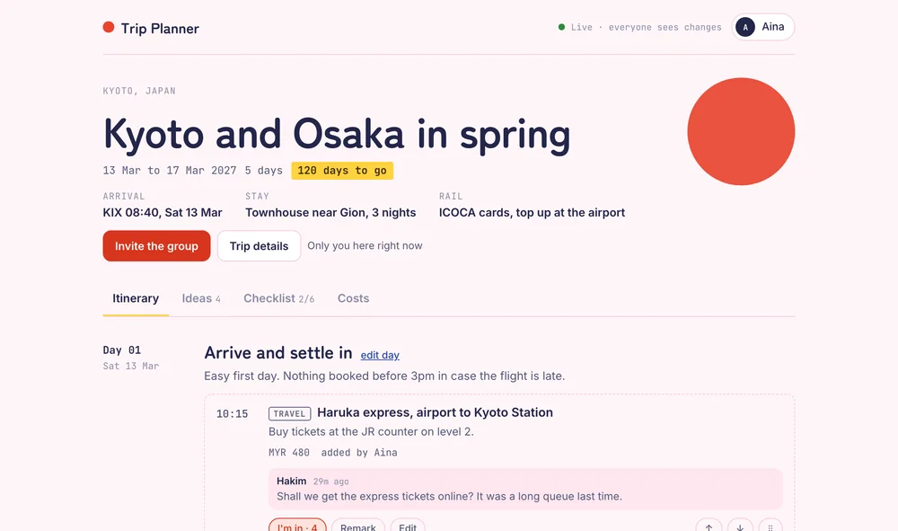
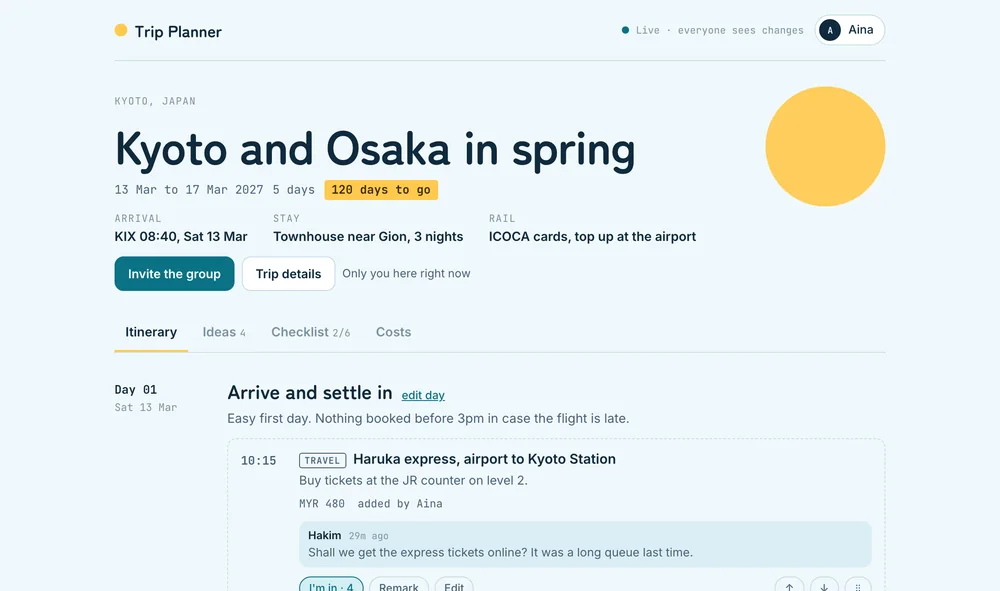
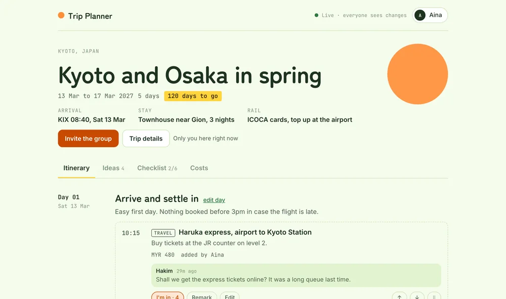
RResult
// 04- 3 real customersused the planning module that Siiru's developer built from the prototype, in my final month there. That is the count I know of before I left.
- 1 day to a working v1From a manual process to a prototype the team could click through, built with Claude Code and no engineering time.
- Private by defaultThe rebuild opens only for people who hold both the link and the trip code.
What I learned
- A working prototype settles a discussion faster than a requirements document.
- AI is quick at writing code. Deciding what the code should do is still the job.
- Testing on a real plan finds problems that a demo never shows.
- Privacy is easier to design in at the start than to add later.
What it does not do
- Names are typed, not verified. Anyone with the link and code can edit the trip.
- It is not a place for passport numbers or booking references.
- Cost splits are equal shares only.
Next
Have a manual process
that needs a prototype?
I scope the problem, build something people can click, and hand it over ready for a team to take further.